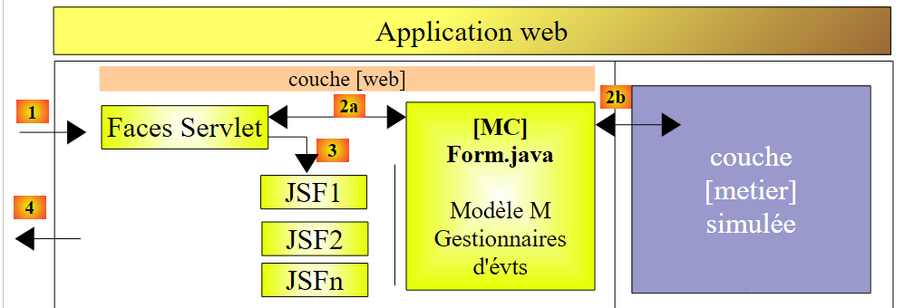
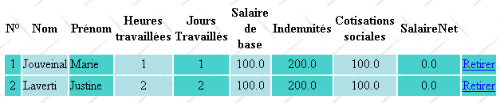
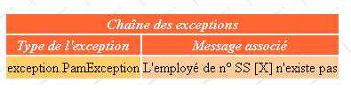
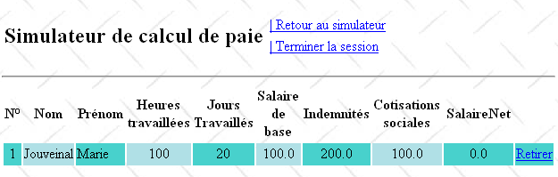
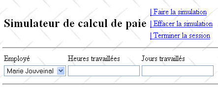

12. Version 7 – Webanwendung PAM mit mehreren Ansichten/Seiten
Wir kehren hier zur ursprünglichen Architektur zurück, in der die Schicht [métier] simuliert wurde. Wir wissen nun, dass diese problemlos durch die tatsächliche Schicht [métier] ersetzt werden kann. Die simulierte Schicht [métier] erleichtert die Tests.
 |
Eine Anwendung vom Typ JSF ist vom Typ MVC (Model-View-Controller):
- Das Servlet [Faces Servlet] ist der generische Controller, der von JSF bereitgestellt wird. Dieser Controller wird durch anwendungsspezifische Ereignisbehandler erweitert. Die bisher behandelten Ereignisbehandler waren Methoden der Klassen, die als Vorlagen für die Seiten JSF dienen
- Die Seiten JSF senden die Antworten an den Client-Browser. Dies sind die Ansichten der Anwendung.
- Die Seiten JSF enthalten dynamische Elemente, die als Seitenmodell bezeichnet werden. Es sei daran erinnert, dass für manche Autoren das Modell die von der Anwendung bearbeiteten Entitäten umfasst, wie beispielsweise die Klassen FeuilleSalaire oder Employe. Um diese beiden Modelle zu unterscheiden, kann man von einem Anwendungsmodell und einem Seitenmodell JSF sprechen.
In der Architektur JSF kann der Wechsel von einer Seite JSFi zu einer Seite JSFj problematisch sein.
- Die Seite JSFi wurde angezeigt. Von dieser Seite aus löst der Benutzer durch ein beliebiges Ereignis [1] einen POST aus
- in JSF; dieses POST wird in der Regel durch eine C-Methode des Mi-Modells der Seite JSFi verarbeitet. Man kann sagen, dass die C-Methode ein sekundärer Controller ist.
- Wenn nach Ausführung dieser Methode die Seite JSFj angezeigt werden soll, muss der Controller C:
- das Modell Mj der Seite JSFj in [2c] aktualisieren
- dem Hauptcontroller den Navigationsschlüssel [2a] übergeben, der die Anzeige der Seite JSFj ermöglicht
Schritt 1 setzt voraus, dass die Vorlage Mi der Seite JSFi einen Verweis auf die Vorlage Mj der Seite JSFj enthält. Dies verkompliziert die Sache ein wenig, da die Mi-Vorlagen dadurch voneinander abhängig werden. Denn der C-Manager der Mi-Vorlage, der die Mj-Vorlage aktualisiert, muss diese kennen. Wenn das Modell Mj geändert werden muss, muss auch der C-Manager des Modells Mi angepasst werden.
Es gibt einen Fall, in dem die gegenseitige Abhängigkeit der Modelle vermieden werden kann: nämlich wenn es ein einziges Modell M gibt, das für alle Seiten JSF verwendet wird. Diese Architektur ist nur in Anwendungen mit wenigen Ansichten einsetzbar, erweist sich dann aber als sehr benutzerfreundlich. Diese Architektur verwenden wir derzeit.
In diesem Zusammenhang sieht die Architektur der Anwendung wie folgt aus:
 |
12.1. Die Ansichten der Anwendung
Dem Benutzer werden folgende Ansichten angezeigt:
-
die Ansicht [VueSaisies], die das Simulationsformular anzeigt
-
die Ansicht [VueSimulation], die zur Anzeige des detaillierten Simulationsergebnisses dient:


- die Ansicht [VueSimulations], die die Liste der vom Kunden durchgeführten Simulationen anzeigt

- die Ansicht [VueSimulationsVides], die anzeigt, dass der Kunde keine oder keine weiteren Simulationen mehr hat:

- die Ansicht [VueErreur], die einen oder mehrere Fehler anzeigt:

12.2. Das NetBeans-Projekt der Ebene [web]
Das NetBeans-Projekt dieser Version ist das folgende Maven-Projekt:
 |
- in [1], die Konfigurationsdateien,
- in [2] die Seiten, in JSF,
- in [3] das Stylesheet und das Hintergrundbild der Ansichten,
- in [4] die Klassen der Ebene [web],
- in [5] die unteren Ebenen der Anwendung,
- in [6] die Meldungsdatei für die Internationalisierung der Anwendung,
- in [7] die Projektabhängigkeiten.
Wir gehen nun auf einige dieser Elemente ein.
12.2.1. Die Konfigurationsdateien
Die Dateien [web.xml] und [faces-config.xml] sind identisch mit denen des vorherigen Projekts, mit Ausnahme eines Details in [web.xml]:
<?xml version="1.0" encoding="UTF-8"?>
<web-app version="3.0" xmlns="http://java.sun.com/xml/ns/javaee" xmlns:xsi="http://www.w3.org/2001/XMLSchema-instance" xsi:schemaLocation="http://java.sun.com/xml/ns/javaee http://java.sun.com/xml/ns/javaee/web-app_3_0.xsd">
...
<welcome-file-list>
<welcome-file>faces/saisie.xhtml</welcome-file>
</welcome-file-list>
...
</web-app>
- Zeilen 4–6: Die Startseite ist die Seite [saisie.xhtml]
12.2.2. Das Stylesheet
Die Datei [styles.css] sieht wie folgt aus:
.simulationsHeader {
text-align: center;
font-style: italic;
color: Snow;
background: Teal;
}
.simuNum {
height: 25px;
text-align: center;
background: MediumTurquoise;
}
.simuNom {
text-align: left;
background: PowderBlue;
}
.simuPrenom {
width: 6em;
text-align: left;
color: Black;
background: MediumTurquoise;
}
.simuHT {
width: 3em;
text-align: center;
color: Black;
background: PowderBlue;
}
.simuJT {
width: 3em;
text-align: center;
color: Black;
background: MediumTurquoise;
}
.simuSalaireBase {
width: 9em;
text-align: center;
color: Black;
background: PowderBlue;
}
.simuIndemnites {
width: 3em;
text-align: center;
color: Black;
background: MediumTurquoise;
}
.simuCotisationsSociales {
width: 6em;
text-align: center;
background: PowderBlue;
}
.simuSalaireNet {
width: 10em;
text-align: center;
background: MediumTurquoise;
}
.erreursHeaders {
background: Teal;
background-color: #ff6633;
color: Snow;
font-style: italic;
text-align: center
}
.erreurClasse {
background: MediumTurquoise;
background-color: #ffcc66;
height: 25px;
text-align: center
}
.erreurMessage {
background: PowderBlue;
background-color: #ffcc99;
text-align: left
}
Hier sind einige Beispiele für JSF-Code, der diese Stile verwendet:
Ansicht „Simulationen“
<h:dataTable value="#{form.simulations}" var="simulation"
headerClass="simulationsHeaders" columnClasses="simuNum,simuNom,simuPrenom,simuHT,simuJT,simuSalaireBase,simuIndemnites,simuCotisationsSociales,simuSalaireNet">
Das Ergebnis sieht wie folgt aus:

Fehleransicht
<h:dataTable value="#{form.erreurs}" var="erreur"
headerClass="erreursHeaders" columnClasses="erreurClasse,erreurMessage">

12.2.3. Die Meldungsdatei
Die Meldungsdatei [messages_fr.properties] lautet wie folgt:
form.titre=Simulateur de calcul de paie
form.comboEmployes.libell\u00e9=Employ\u00e9
form.heuresTravaill\u00e9es.libell\u00e9=Heures travaill\u00e9es
form.joursTravaill\u00e9s.libell\u00e9=Jours travaill\u00e9s
form.heuresTravaill\u00e9es.required=Indiquez le nombre d'heures travaill\u00e9es
form.heuresTravaill\u00e9es.validation=Donn\u00e9e incorrecte
form.joursTravaill\u00e9s.required=Indiquez le nombre de jours travaill\u00e9s
form.joursTravaill\u00e9s.validation=Donn\u00e9e incorrecte
form.btnSalaire.libell\u00e9=Salaire
form.btnRaz.libell\u00e9=Raz
exception.header=L'exception suivante s'est produite
exception.httpCode=Code HTTP de l'erreur
exception.message=Message de l'exception
exception.requestUri=Url demand\u00e9e lors de l'erreur
exception.servletName=Nom de la servlet demand\u00e9e lorsque l'erreur s'est produite
form.infos.employ\u00e9=Informations Employ\u00e9
form.employe.nom=Nom
form.employe.pr\u00e9nom=Pr\u00e9nom
form.employe.adresse=Adresse
form.employe.ville=Ville
form.employe.codePostal=Code postal
form.employe.indice=Indice
form.infos.cotisations=Informations Cotisations sociales
form.cotisations.csgrds=CSGRDS
form.cotisations.csgd=CSGD
form.cotisations.retraite=Retraite
form.cotisations.secu=S\u00e9curit\u00e9 sociale
form.infos.indemnites=Informations Indemnit\u00e9s
form.indemnites.salaireHoraire=Salaire horaire
form.indemnites.entretienJour=Entretien / Jour
form.indemnites.repasJour=Repas / Jour
form.indemnites.cong\u00e9sPay\u00e9s=Cong\u00e9s pay\u00e9s
form.infos.salaire=Informations Salaire
form.salaire.base=Salaire de base
form.salaire.cotisationsSociales=Cotisations sociales
form.salaire.entretien=Indemnit\u00e9s d'entretien
form.salaire.repas=Indemnit\u00e9s de repas
form.salaire.net=Salaire net
form.menu.faireSimulation=| Faire la simulation
form.menu.effacerSimulation=| Effacer la simulation
form.menu.enregistrerSimulation=| Enregistrer la simulation
form.menu.retourSimulateur=| Retour au simulateur
form.menu.voirSimulations=| Voir les simulations
form.menu.terminerSession=| Terminer la session
simulations.headers.nom=Nom
simulations.headers.nom=Nom
simulations.headers.prenom=Pr\u00e9nom
simulations.headers.heuresTravaillees=Heures travaill\u00e9es
simulations.headers.joursTravailles=Jours Travaill\u00e9s
simulations.headers.salaireBase=Salaire de base
simulations.headers.indemnites=Indemnit\u00e9s
simulations.headers.cotisationsSociales=Cotisations sociales
simulations.headers.salaireNet=SalaireNet
simulations.headers.numero=N\u00b0
erreur.titre=Une erreur s'est produite.
erreur.exceptions=Cha\u00eene des exceptions
exception.type=Type de l'exception
exception.message=Message associ\u00e9
12.2.4. Die Ebene [métier]
Die simulierte Ebene [métier] wird wie folgt geändert:
package metier;
...
public class Metier implements ImetierLocal, Serializable {
// Mitarbeiterliste
private Map<String,Employe> hashEmployes=new HashMap<String,Employe>();
private List<Employe> listEmployes;
// Lohnabrechnung abrufen
public FeuilleSalaire calculerFeuilleSalaire(String SS,
double nbHeuresTravaillées, int nbJoursTravaillés) {
// Mitarbeiter abrufen
Employe e=hashEmployes.get(SS);
// Ausnahme auslösen, wenn der Mitarbeiter nicht existiert
if(e==null){
throw new PamException(String.format("L'employé de n° SS [%s] n'existe pas",SS),1);
}
// Eine fiktive Gehaltsabrechnung ausgeben
return new FeuilleSalaire(e,new Cotisation(3.49,6.15,9.39,7.88),e.getIndemnite(),new ElementsSalaire(100,100,100,100,100));
}
// Liste der Mitarbeiter
public List<Employe> findAllEmployes() {
if(listEmployes==null){
// Es wird eine Liste mit drei Mitarbeitern erstellt
listEmployes=new ArrayList<Employe>();
listEmployes.add(new Employe("254104940426058","Jouveinal","Marie","5 rue des oiseaux","St Corentin","49203",new Indemnite(2,2.1,2.1,3.1,15)));
listEmployes.add(new Employe("260124402111742","Laverti","Justine","La brûlerie","St Marcel","49014",new Indemnite(1,1.93,2,3,12)));
// Mitarbeiterverzeichnis
for(Employe e:listEmployes){
hashEmployes.put(e.getSS(),e);
}
// Ein Mitarbeiter wird hinzugefügt, der im Verzeichnis nicht existiert
listEmployes.add(new Employe("X","Y","Z","La brûlerie","St Marcel","49014",new Indemnite(1,1.93,2,3,12)));
}
// die Mitarbeiterliste wird ausgegeben
return listEmployes;
}
}
- Zeile 8: die Liste der Mitarbeiter
- Zeile 7: dieselbe Liste in Form eines nach der Mitarbeiter-Nr. SS indizierten Wörterbuchs
- Zeilen 24–39: Die Methode findAllEmployes, die die Liste der Mitarbeiter ausgibt. Diese Methode erstellt eine feste Liste und verweist auf das Feld employés aus Zeile 8.
- Zeilen 27–33: Es werden eine Liste und ein Verzeichnis mit zwei Mitarbeitern erstellt
- Zeile 35: Ein Mitarbeiter wird zur Mitarbeiterliste (Zeile 8) hinzugefügt, jedoch nicht zum Verzeichnis hashEmployes (Zeile 7). Dies geschieht, damit er in der Mitarbeiter-Auswahlliste erscheint, anschließend jedoch von der Methode calculerFeuilleSalaire (Zeile 14) nicht erkannt wird, sodass diese eine Ausnahme auslöst (Zeile 17).
- Zeilen 11–21: Die Methode calculerFeuilleSalaire
- Zeile 14: Der Mitarbeiter wird im Verzeichnis hashEmployes anhand seiner Nummer SS gesucht. Wird er nicht gefunden, wird eine Ausnahme ausgelöst (Zeilen 16–18). Somit erhalten wir eine Ausnahme für den Mitarbeiter mit der Nummer SS X, der in Zeile 35 in die Mitarbeiterliste aufgenommen wurde, aber nicht im Verzeichnis hashEmployes enthalten ist.
- In Zeile 20 wird eine fiktive Gehaltsabrechnung erstellt und zurückgegeben.
12.3. Die Beans der Anwendung
Es gibt drei Beans mit unterschiedlichem Geltungsbereich:
 |
12.3.1. Das Bean ApplicationData
Die Bean ApplicationData hat den Gültigkeitsbereich application:
package web.beans.application;
import java.io.Serializable;
import java.util.logging.Logger;
import javax.annotation.PostConstruct;
import javax.enterprise.context.ApplicationScoped;
import javax.inject.Named;
import metier.IMetierLocal;
import metier.Metier;
@Named
@ApplicationScoped
public class ApplicationData implements Serializable {
// Geschäftslogik
private IMetierLocal metier = new Metier();
// Protokollierung
private boolean logsEnabled = true;
private final Logger logger = Logger.getLogger("pam");
public ApplicationData() {
}
@PostConstruct
public void init() {
// Protokoll
if (isLogsEnabled()) {
logger.info("ApplicationData");
}
}
// Getter und Setter
...
}
- Zeile 11: Die Annotation @Named macht die Klasse zu einem verwalteten Bean. Es ist zu beachten, dass im Gegensatz zum vorherigen Projekt die Annotation @ManagedBean nicht verwendet wurde. Der Grund dafür ist, dass die Referenz dieser Klasse mithilfe der Annotation @Inject in eine andere Klasse injiziert werden muss und dass diese Annotation nur Klassen mit der Annotation @Named injiziert.
- Zeile 12: Die Annotation @ApplicationScoped macht die Klasse zu einem Objekt mit Anwendungsbereich. Es ist zu beachten, dass die Klasse der Annotation [javax.enterprise.context.ApplicationScoped] (Zeile 6) lautet und nicht [javax.faces.bean.ApplicationScoped] wie bei den Beans des vorherigen Projekts.
Der Bean ApplicationData dient zwei Zwecken:
- Zeile 16: Aufrechterhaltung einer Referenz auf die Schicht [métier],
- Zeilen 18–19: Definition eines Loggers, der von den anderen Beans verwendet werden kann, um Protokolle auf der GlassFish-Konsole zu erstellen.
12.3.2. Die Bean SessionData
Die Bean SessionData hat den Geltungsbereich „Session“:
package web.beans.session;
import java.io.Serializable;
import java.util.ArrayList;
import java.util.List;
import javax.annotation.PostConstruct;
import javax.enterprise.context.SessionScoped;
import javax.inject.Inject;
import javax.inject.Named;
import web.beans.application.ApplicationData;
import web.entities.Simulation;
@Named
@SessionScoped
public class SessionData implements Serializable {
// Anwendung
@Inject
private ApplicationData applicationData;
// Simulationen
private List<Simulation> simulations = new ArrayList<Simulation>();
private int numDerniereSimulation = 0;
private Simulation simulation;
// Menüs
private boolean menuFaireSimulationIsRendered = true;
private boolean menuEffacerSimulationIsRendered = true;
private boolean menuEnregistrerSimulationIsRendered;
private boolean menuVoirSimulationsIsRendered;
private boolean menuRetourSimulateurIsRendered;
private boolean menuTerminerSessionIsRendered = true;
// Lokalisierung
private String locale="fr_FR";
// Konstruktor
public SessionData() {
}
@PostConstruct
public void init() {
// Protokoll
if (applicationData.isLogsEnabled()) {
applicationData.getLogger().info("SessionData");
}
}
// Menüverwaltung
public void setMenu(boolean menuFaireSimulationIsRendered, boolean menuEnregistrerSimulationIsRendered, boolean menuEffacerSimulationIsRendered, boolean menuVoirSimulationsIsRendered, boolean menuRetourSimulateurIsRendered, boolean menuTerminerSessionIsRendered) {
this.setMenuFaireSimulationIsRendered(menuFaireSimulationIsRendered);
this.setMenuEnregistrerSimulationIsRendered(menuEnregistrerSimulationIsRendered);
this.setMenuVoirSimulationsIsRendered(menuVoirSimulationsIsRendered);
this.setMenuEffacerSimulationIsRendered(menuEffacerSimulationIsRendered);
this.setMenuRetourSimulateurIsRendered(menuRetourSimulateurIsRendered);
this.setMenuTerminerSessionIsRendered(menuTerminerSessionIsRendered);
}
// Getter und Setter
...
}
- Zeile 13: Die Klasse SessionData ist ein verwaltetes Bean (@Named), das in andere verwaltete Beans injiziert werden kann,
- Zeile 14: Sie hat den Gültigkeitsbereich „Session“ (@SessionScoped),
- Zeilen 18–19: Eine Referenz auf die Bean ApplicationData wird in sie injiziert (@Inject),
- Zeilen 21–32: die Anwendungsdaten, die über mehrere Sitzungen hinweg beibehalten werden sollen.
- Zeile 21: die Liste der vom Benutzer durchgeführten Simulationen,
- Zeile 22: die Nummer der zuletzt gespeicherten Simulation,
- Zeile 23: die zuletzt durchgeführte Simulation,
- Zeilen 25–30: die Menüoptionen,
- Zeile 32: die Ländereinstellung der Anwendung.
Zeilen 39–44: Die Methode „init“ wird nach der Instanziierung der Klasse (@PostConstruct) ausgeführt. Hier wird sie lediglich verwendet, um ihre Ausführung zu protokollieren. Man muss sicherstellen können, dass sie nur einmal pro Benutzer ausgeführt wird, da die Klasse den Gültigkeitsbereich „Session“ hat. Zeile 42: Die Methode verwendet den in der Klasse ApplicationData definierten Logger. Aus diesem Grund musste eine Referenz auf diese Bean injiziert werden (Zeilen 18–19).
12.3.3. Die Form-Bean
Die Form-Bean hat den Geltungsbereich requête:
package web.beans.request;
import java.util.ArrayList;
import java.util.List;
import javax.enterprise.context.RequestScoped;
import javax.faces.context.FacesContext;
import javax.inject.Inject;
import javax.inject.Named;
import javax.servlet.http.HttpServletRequest;
import jpa.Employe;
import metier.FeuilleSalaire;
import web.beans.application.ApplicationData;
import web.beans.session.*;
import web.entities.Erreur;
import web.entities.Simulation;
@Named
@RequestScoped
public class Form {
public Form() {
}
// andere Beans
@Inject
private ApplicationData applicationData;
@Inject
private SessionData sessionData;
// das View-Modell
private String comboEmployesValue = "";
private String heuresTravaillées = "";
private String joursTravaillés = "";
private Integer numSimulationToDelete;
private List<Erreur> erreurs = new ArrayList<Erreur>();
private FeuilleSalaire feuilleSalaire;
// Mitarbeiterliste
public List<Employe> getEmployes(){
return applicationData.getMetier().findAllEmployes();
}
// Menüaktion
public String faireSimulation() {
...
}
public String enregistrerSimulation() {
...
}
public String effacerSimulation() {
...
}
public String voirSimulations() {
...
}
public String retourSimulateur() {
...
}
public String terminerSession() {
...
}
public String retirerSimulation() {
...
}
private void razFormulaire() {
...
}
// Getter und Setter
...
}
- Zeile 17: Die Klasse ist ein verwalteter Bean (@Named),
- Zeile 18: mit dem Geltungsbereich „Anfrage“ (@RequestScoped),
- Zeilen 24–25: Injektion einer Referenz auf die Bean mit Anwendungsbereich ApplicationData,
- Zeilen 26–27: Injektion einer Referenz auf die Bean mit Sitzungsgültigkeit SessionData.
12.4. Die Seiten der Anwendung
 |
12.4.1. [layout.xhtml]
Die Seite [layout.xhtml] sorgt für das Layout aller Ansichten:
<?xml version='1.0' encoding='UTF-8' ?>
<!DOCTYPE html PUBLIC "-//W3C//DTD XHTML 1.0 Transitional//EN" "http://www.w3.org/TR/xhtml1/DTD/xhtml1-transitional.dtd">
<html xmlns="http://www.w3.org/1999/xhtml"
xmlns:h="http://java.sun.com/jsf/html"
xmlns:f="http://java.sun.com/jsf/core"
xmlns:ui="http://java.sun.com/jsf/facelets">
<f:view locale="#{sessionData.locale}">
<h:head>
<title><h:outputText value="#{msg['form.titre']}"/></title>
<h:outputStylesheet library="css" name="styles.css"/>
</h:head>
<script type="text/javascript">
function raz(){
// Die übermittelten Werte werden geändert
document.forms['formulaire'].elements['formulaire:comboEmployes'].value="0";
document.forms['formulaire'].elements['formulaire:heuresTravaillees'].value="0";
document.forms['formulaire'].elements['formulaire:joursTravailles'].value="0";
}
</script>
<h:body style="background-image: url('${request.contextPath}/resources/images/standard.jpg');">
<h:form id="formulaire">
<!-- Kopfzeile -->
<ui:include src="entete.xhtml" />
<!-- Inhalt -->
<ui:insert name="part1" >
Gestion des assistantes maternelles
</ui:insert>
<ui:insert name="part2"/>
</h:form>
</h:body>
</f:view>
</html>
Jede Ansicht besteht aus den folgenden Elementen:
- einer Kopfzeile, die vom Fragment [entete.xhtml] (Zeile 24) angezeigt wird,
- einem Hauptteil, der aus zwei Fragmenten namens „part1“ (Zeilen 26–28) und „part2“ (Zeile 29) besteht,
- Zeile 8: Das Attribut „locale“ sorgt für die Internationalisierung der Seiten. Hier gibt es nur eine: fr_FR,
- Zeilen 14–19: ein JavaScript-Code.
Die Seite [layout.xhtml] wird wie folgt angezeigt:
 |
- in [1], die Kopfzeile [entete.xhtml],
- in [2] das Fragment „part1“.
12.4.2. Der Header [entete.xhtml]
Der Code der Seite [entete.xhtml] lautet wie folgt:
<?xml version='1.0' encoding='UTF-8' ?>
<!DOCTYPE html PUBLIC "-//W3C//DTD XHTML 1.0 Transitional//EN" "http://www.w3.org/TR/xhtml1/DTD/xhtml1-transitional.dtd">
<html xmlns="http://www.w3.org/1999/xhtml"
xmlns:h="http://java.sun.com/jsf/html"
xmlns:f="http://java.sun.com/jsf/core"
xmlns:ui="http://java.sun.com/jsf/facelets">
<ui:composition>
<!-- Kopfzeile -->
<h:panelGrid columns="2">
<h:panelGroup>
<h2><h:outputText value="#{msg['form.titre']}"/></h2>
</h:panelGroup>
<h:panelGroup>
<h:panelGrid columns="1">
<h:commandLink id="cmdFaireSimulation" value="#{msg['form.menu.faireSimulation']}" action="#{form.faireSimulation}" rendered="#{sessionData.menuFaireSimulationIsRendered}"/>
<h:commandLink id="cmdEffacerSimulation" onclick="raz()" value="#{msg['form.menu.effacerSimulation']}" action="#{form.effacerSimulation}" rendered="#{sessionData.menuEffacerSimulationIsRendered}"/>
<h:commandLink id="cmdEnregistrerSimulation" immediate="true" value="#{msg['form.menu.enregistrerSimulation']}" action="#{form.enregistrerSimulation}" rendered="#{sessionData.menuEnregistrerSimulationIsRendered}"/>
<h:commandLink id="cmdVoirSimulations" immediate="true" value="#{msg['form.menu.voirSimulations']}" action="#{form.voirSimulations}" rendered="#{sessionData.menuVoirSimulationsIsRendered}"/>
<h:commandLink id="cmdRetourSimulateur" immediate="true" value="#{msg['form.menu.retourSimulateur']}" action="#{form.retourSimulateur}" rendered="#{sessionData.menuRetourSimulateurIsRendered}"/>
<h:commandLink id="cmdTerminerSession" immediate="true" value="#{msg['form.menu.terminerSession']}" action="#{form.terminerSession}" rendered="#{sessionData.menuTerminerSessionIsRendered}"/>
</h:panelGrid>
</h:panelGroup>
</h:panelGrid>
<hr/>
</ui:composition>
</html>
- Zeile 12: der Titel der Anwendung,
- Zeilen 16–21: die sechs Links, die den sechs Aktionen entsprechen, die der Benutzer ausführen kann. Diese Links werden (Attribut „rendered“) durch boolesche Werte der Bean SessionData gesteuert,
- Zeile 17: Ein Klick auf den Link [Effacer la simulation] löst die Ausführung der JavaScript-Funktion „raz“ aus. Diese wurde im Modell [layout.xhtml] definiert,
- Zeile 18: Das Attribut „immediate=true“ bewirkt, dass die Gültigkeit der Daten vor der Ausführung der Methode [Form].enregistrerSimulation nicht überprüft wird. Dies ist beabsichtigt. Möglicherweise möchte man die letzte Simulation, die vor einer Minute durchgeführt wurde, speichern, auch wenn die seitdem in das Formular eingegebenen (aber noch nicht validierten) Daten ungültig sind. Das Gleiche gilt für die Aktionen [Voir les simulations], [Effacer la simulation], [Retour au simulateur] und [Terminer la session].
12.5. Anwendungsfälle der Anwendung
12.5.1. Anzeige der Startseite
Die Startseite ist die folgende Seite [saisie.xhtml]:
<?xml version='1.0' encoding='UTF-8' ?>
<!DOCTYPE html PUBLIC "-//W3C//DTD XHTML 1.0 Transitional//EN" "http://www.w3.org/TR/xhtml1/DTD/xhtml1-transitional.dtd">
<html xmlns="http://www.w3.org/1999/xhtml"
xmlns:h="http://java.sun.com/jsf/html"
xmlns:f="http://java.sun.com/jsf/core"
xmlns:ui="http://java.sun.com/jsf/facelets">
<ui:composition template="layout.xhtml">
<ui:define name="part1">
<ui:include src="saisie2.xhtml"/>
</ui:define>
</ui:composition>
</html>
- Zeile 8: Sie wird innerhalb der Seite [layout.xhtml] angezeigt,
- Zeile 9: anstelle des Fragments mit dem Namen „part1“. In diesem Fragment wird die Seite [saisie2.xhtml] angezeigt:
<?xml version='1.0' encoding='UTF-8' ?>
<!DOCTYPE html PUBLIC "-//W3C//DTD XHTML 1.0 Transitional//EN" "http://www.w3.org/TR/xhtml1/DTD/xhtml1-transitional.dtd">
<html xmlns="http://www.w3.org/1999/xhtml"
xmlns:h="http://java.sun.com/jsf/html"
xmlns:f="http://java.sun.com/jsf/core"
xmlns:ui="http://java.sun.com/jsf/facelets">
<h:panelGrid columns="3">
<h:outputText value="#{msg['form.comboEmployes.libellé']}"/>
<h:outputText value="#{msg['form.heuresTravaillées.libellé']}"/>
<h:outputText value="#{msg['form.joursTravaillés.libellé']}"/>
<h:selectOneMenu id="comboEmployes" value="#{form.comboEmployesValue}">
<f:selectItems .../>
</h:selectOneMenu>
<h:inputText id="heuresTravaillees" value="#{form.heuresTravaillées}" required="true" requiredMessage="#{msg['form.heuresTravaillées.required']}" validatorMessage="#{msg['form.heuresTravaillées.validation']}">
<f:validateDoubleRange minimum="0" maximum="300"/>
</h:inputText>
<h:inputText id="joursTravailles" value="#{form.joursTravaillés}" required="true" requiredMessage="#{msg['form.joursTravaillés.required']}" validatorMessage="#{msg['form.joursTravaillés.validation']}">
<f:validateLongRange minimum="0" maximum="31"/>
</h:inputText>
<h:panelGroup></h:panelGroup>
<h:message for="heuresTravaillees" styleClass="error"/>
<h:message for="joursTravailles" styleClass="error"/>
</h:panelGrid>
<hr/>
</html>
Dieser Code zeigt die folgende Ansicht an:
 |
Aufgabe: Vervollständigen Sie Zeile 13 des Codes XHTML. Die Liste der Elemente im Kombinationsfeld „Mitarbeiter“ wird von einer Methode des Beans [Form] bereitgestellt. Schreiben Sie diese Methode. Die im Kombinationsfeld angezeigten Elemente haben die Eigenschaft itemValue, deren Wert der Nummer SS eines Mitarbeiters entspricht, und die Eigenschaft itemLabel ist eine Zeichenkette, die sich aus dem Vornamen und dem Nachnamen dieses Mitarbeiters zusammensetzt.
Frage: Wie muss die Bean [SessionData] initialisiert werden, damit bei der ersten Abfrage GET, die an das Formular gesendet wird, das Menü in der Kopfzeile wie oben gezeigt angezeigt wird?
12.5.2. Die Aktion [faireSimulation]
Der Code JSF der Aktion [faireSimulation] lautet wie folgt:
<h:commandLink id="cmdFaireSimulation" value="#{msg['form.menu.faireSimulation']}" action="#{form.faireSimulation}" rendered="#{sessionData.menuFaireSimulationIsRendered}"/>
Die Aktion [faireSimulation] berechnet eine Lohnabrechnung:

Ausgehend von der vorherigen Seite erhält man folgendes Ergebnis:
 |
 |
Die Simulation wird auf der folgenden Seite [simulation.xhtml] angezeigt:
<?xml version='1.0' encoding='UTF-8' ?>
<!DOCTYPE html PUBLIC "-//W3C//DTD XHTML 1.0 Transitional//EN" "http://www.w3.org/TR/xhtml1/DTD/xhtml1-transitional.dtd">
<html xmlns="http://www.w3.org/1999/xhtml"
xmlns:h="http://java.sun.com/jsf/html"
xmlns:f="http://java.sun.com/jsf/core"
xmlns:ui="http://java.sun.com/jsf/facelets">
<ui:composition template="layout.xhtml">
<ui:define name="part1">
<ui:include src="saisie2.xhtml"/>
</ui:define>
<ui:define name="part2">
<h:outputText value="#{msg['form.infos.employé']}" styleClass="titreInfos"/>
<br/><br/>
<h:panelGrid columns="3" rowClasses="libelle,info">
<h:outputText value="#{msg['form.employe.nom']}"/>
<h:outputText value="#{msg['form.employe.prénom']}"/>
<h:outputText value="#{msg['form.employe.adresse']}"/>
<h:outputText value="#{form.feuilleSalaire.employe.nom}"/>
<h:outputText value="#{form.feuilleSalaire.employe.prenom}"/>
<h:outputText value="#{form.feuilleSalaire.employe.adresse}"/>
</h:panelGrid>
<h:panelGrid columns="3" rowClasses="libelle,info">
<h:outputText value="#{msg['form.employe.ville']}"/>
<h:outputText value="#{msg['form.employe.codePostal']}"/>
<h:outputText value="#{msg['form.employe.indice']}"/>
<h:outputText value="#{form.feuilleSalaire.employe.ville}"/>
<h:outputText value="#{form.feuilleSalaire.employe.codePostal}"/>
<h:outputText value="#{form.feuilleSalaire.employe.indemnite.indice}"/>
</h:panelGrid>
<br/>
<h:outputText value="#{msg['form.infos.cotisations']}" styleClass="titreInfos"/>
<br/><br/>
<h:panelGrid columns="4" rowClasses="libelle,info">
<h:outputText value="#{msg['form.cotisations.csgrds']}"/>
<h:outputText value="#{msg['form.cotisations.csgd']}"/>
<h:outputText value="#{msg['form.cotisations.retraite']}"/>
<h:outputText value="#{msg['form.cotisations.secu']}"/>
<h:outputText value="#{form.feuilleSalaire.cotisation.csgrds} %"/>
<h:outputText value="#{form.feuilleSalaire.cotisation.csgd} %"/>
<h:outputText value="#{form.feuilleSalaire.cotisation.retraite} %"/>
<h:outputText value="#{form.feuilleSalaire.cotisation.secu} %"/>
</h:panelGrid>
<br/>
<h:outputText value="#{msg['form.infos.indemnites']}" styleClass="titreInfos"/>
<br/><br/>
<h:panelGrid columns="4" rowClasses="libelle,info">
<h:outputText value="#{msg['form.indemnites.salaireHoraire']}"/>
<h:outputText value="#{msg['form.indemnites.entretienJour']}"/>
<h:outputText value="#{msg['form.indemnites.repasJour']}"/>
<h:outputText value="#{msg['form.indemnites.congésPayés']}"/>
<h:outputFormat value="{0,number,currency}">
<f:param value="#{form.feuilleSalaire.employe.indemnite.baseHeure}"/>
</h:outputFormat>
<h:outputFormat value="{0,number,currency}">
<f:param value="#{form.feuilleSalaire.employe.indemnite.entretienJour}"/>
</h:outputFormat>
<h:outputFormat value="{0,number,currency}">
<f:param value="#{form.feuilleSalaire.employe.indemnite.repasJour}"/>
</h:outputFormat>
<h:outputText value="#{form.feuilleSalaire.employe.indemnite.indemnitesCP} %"/>
</h:panelGrid>
<br/>
<h:outputText value="#{msg['form.infos.salaire']}" styleClass="titreInfos"/>
<br/><br/>
<h:panelGrid columns="4" rowClasses="libelle,info">
<h:outputText value="#{msg['form.salaire.base']}"/>
<h:outputText value="#{msg['form.salaire.cotisationsSociales']}"/>
<h:outputText value="#{msg['form.salaire.entretien']}"/>
<h:outputText value="#{msg['form.salaire.repas']}"/>
<h:outputFormat value="{0,number,currency}">
<f:param value="#{form.feuilleSalaire.elementsSalaire.salaireBase}"/>
</h:outputFormat>
<h:outputFormat value="{0,number,currency}">
<f:param value="#{form.feuilleSalaire.elementsSalaire.cotisationsSociales}"/>
</h:outputFormat>
<h:outputFormat value="{0,number,currency}">
<f:param value="#{form.feuilleSalaire.elementsSalaire.indemnitesEntretien}"/>
</h:outputFormat>
<h:outputFormat value="{0,number,currency}">
<f:param value="#{form.feuilleSalaire.elementsSalaire.indemnitesRepas}"/>
</h:outputFormat>
</h:panelGrid>
<br/>
<h:panelGrid columns="3" columnClasses="libelle,col2,info">
<h:outputText value="#{msg['form.salaire.net']}"/>
<h:panelGroup></h:panelGroup>
<h:outputFormat value="{0,number,currency}">
<f:param value="#{form.feuilleSalaire.elementsSalaire.salaireNet}"/>
</h:outputFormat>
</h:panelGrid>
</ui:define>
</ui:composition>
</html>
- Zeile 8: Die Seite [simulation.xhtml] wird in die Seite [layout.xhtml] eingefügt,
- Zeilen 9–11: Der Eingabebereich wird im Fragment „part1“ der Layout-Seite angezeigt,
- Zeilen 12–91: Die Simulation wird im Fragment „part2“ der Layout-Seite angezeigt.
Aufgabe: Schreiben Sie die Methode [faireSimulation] der Klasse [Form]. Die Simulation wird im Bean SessionData gespeichert.
12.5.3. Fehlerbehandlung
Wir möchten die Ausnahmen, die bei der Berechnung einer Simulation auftreten können, ordnungsgemäß behandeln. Zu diesem Zweck verwendet der Code der Methode [faireSimulation] eine try/catch-Anweisung:
// Menüaktion
public String faireSimulation(){
try{
// Lohnabrechnung berechnen
feuilleSalaire= ...
// Simulation anzeigen
...
// Das Menü wird aktualisiert
...
// Simulationsansicht anzeigen
return "simulation";
}catch(Throwable th){
// die Liste der vorherigen Fehler wird geleert
...
// die neue Fehlerliste wird erstellt
...
// die Ansicht wird angezeigt vueErreur
...
// Das Menü wird aktualisiert
...
// Die Fehleransicht wird angezeigt
return "erreurs";
}
}
Die in Zeile 15 erstellte Fehlerliste lautet wie folgt:
// die Vorlage für die Ansichten
...
private List<Erreur> erreurs=new ArrayList<Erreur>();
...
Die Klasse „Fehler“ ist wie folgt definiert:
package web.entities;
public class Erreur {
public Erreur() {
}
// Feld
private String classe;
private String message;
// Konstruktor
public Erreur(String classe, String message){
this.setClasse(classe);
this.message=message;
}
// Getter und Setter
...
}
Fehler werden als Ausnahmen behandelt, deren Klassenname im Feld „Klasse“ und deren Meldung im Feld „Meldung“ gespeichert wird.
Die in der Methode [faireSimulation] erstellte Fehlerliste besteht aus:
- der ursprünglichen Ausnahme „th“ vom Typ Throwable, die aufgetreten ist,
- ihrer Ursache th.getCause(), falls vorhanden,
- der Ursache der Ursache h.getCause().getCause(), sofern vorhanden.
- ...
Hier ein Beispiel für eine Fehlerliste:

Im obigen Beispiel existiert der Mitarbeiter [Z Y] nicht im Mitarbeiterverzeichnis, das von der simulierten Schicht [métier] verwendet wird. In diesem Fall löst die simulierte Schicht [métier] eine Ausnahme aus (Zeile 6 unten):
public FeuilleSalaire calculerFeuilleSalaire(String SS, double nbHeuresTravaillées, int nbJoursTravaillés) {
// Der Mitarbeiter wird abgerufen
Employe e=hashEmployes.get(SS);
// Es wird eine Ausnahme ausgelöst, wenn der Mitarbeiter nicht existiert
if(e==null){
throw new PamException(String.format("L'employé de n° SS [%s] n'existe pas",SS),1);
}
...
}
Das Ergebnis lautet wie folgt:

Diese Ansicht wird von der folgenden Seite [erreurs.xhtml] angezeigt:
<?xml version='1.0' encoding='UTF-8' ?>
<!DOCTYPE html PUBLIC "-//W3C//DTD XHTML 1.0 Transitional//EN" "http://www.w3.org/TR/xhtml1/DTD/xhtml1-transitional.dtd">
<html xmlns="http://www.w3.org/1999/xhtml"
xmlns:h="http://java.sun.com/jsf/html"
xmlns:f="http://java.sun.com/jsf/core"
xmlns:ui="http://java.sun.com/jsf/facelets">
<ui:composition template="layout.xhtml">
<ui:define name="part1">
<h3><h:outputText value="#{msg['erreur.titre']}"/></h3>
<h:dataTable value="#{form.erreurs}" var="erreur"
headerClass="erreursHeaders" columnClasses="erreurClasse,erreurMessage">
<f:facet name="header">
<h:outputText value="#{msg['erreur.exceptions']}"/>
</f:facet>
<h:column>
<f:facet name="header">
<h:outputText value="#{msg['exception.type']}"/>
</f:facet>
<h:outputText value="#{erreur.classe}"/>
</h:column>
<h:column>
<f:facet name="header">
<h:outputText value="#{msg['exception.message']}"/>
</f:facet>
<h:outputText value="#{erreur.message}"/>
</h:column>
</h:dataTable>
</ui:define>
</ui:composition>
</html>
Frage: Ergänzen Sie die Methode [faireSimulation] so, dass bei einer Ausnahme die Ansicht [vueErreur] angezeigt wird.
12.5.4. Die Aktion [effacerSimulation]
Die Aktion [effacerSimulation] ermöglicht es dem Benutzer, ein leeres Formular aufzurufen:
 |
Der Code JSF des Links [effacerSimulation] lautet wie folgt:
<h:commandLink id="cmdEffacerSimulation" onclick="raz()" value="#{msg['form.menu.effacerSimulation']}" action="#{form.effacerSimulation}" rendered="#{sessionData.menuEffacerSimulationIsRendered}"/>
Ein Klick auf den Link [EffacerSimulation] löst zunächst den Aufruf der JavaScript-Funktion raz() aus. Diese Methode ist auf der Seite [layout.xhtml] definiert:
<script type="text/javascript">
function raz(){
// die übermittelten Werte werden geändert
document.forms['formulaire'].elements['formulaire:comboEmployes'].value="0";
document.forms['formulaire'].elements['formulaire:heuresTravaillees'].value="0";
document.forms['formulaire'].elements['formulaire:joursTravailles'].value="0";
}
</script>
Die Zeilen 4–6 ändern die übermittelten Werte. Dabei ist zu beachten, dass
- die übermittelten Werte gültig sind (c.a.d) und somit die Validierungsprüfungen der Eingabefelder heuresTravaillees und joursTravailles bestehen werden.
- Die Funktion raz übermittelt das Formular nicht. Dieses wird nämlich über den Link cmdEffacerSimulation übermittelt. Dieser Vorgang (post) erfolgt nach Ausführung der JavaScript-Funktion raz.
Während der Ausführung von post durchlaufen die übermittelten Werte den normalen Ablauf: Validierung und anschließende Zuordnung zu den Feldern des Modells. Diese sind in der Klasse [Form] wie folgt definiert:
// das View-Modell
private String comboEmployesValue;
private String heuresTravaillées;
private String joursTravaillés;
...
In diese drei Felder werden die drei übermittelten Werte {"0","0","0"} geschrieben. Sobald diese Zuweisung erfolgt ist, wird die Methode effacerSimulation ausgeführt.
Aufgabe: Schreiben Sie die Methode [effacerSimulation] der Klasse [Form]. Dabei ist Folgendes zu beachten:
-
nur der Eingabebereich angezeigt wird,
-
das Kombinationsfeld auf sein erstes Element positioniert ist,
-
die Eingabefelder heuresTravaillees und joursTravailles leere Zeichenfolgen anzeigen.
12.5.5. Die Aktion [enregistrerSimulation]
Der Code JSF des Links [enregistrerSimulation] lautet wie folgt:
<h:commandLink id="cmdEnregistrerSimulation" immediate="true" value="#{msg['form.menu.enregistrerSimulation']}" action="#{form.enregistrerSimulation}" rendered="#{sessionData.menuEnregistrerSimulationIsRendered}"/>
Die mit dem Link verknüpfte Aktion [enregistrerSimulation] ermöglicht es, die aktuelle Simulation in einer Simulationsliste zu speichern, die in der Klasse [SessionData] verwaltet wird:
private List<Simulation> simulations=new ArrayList<Simulation>();
Die Klasse „ -Simulation“ lautet wie folgt:
package web.entities;
import metier.FeuilleSalaire;
public class Simulation {
public Simulation() {
}
// Felder einer Simulation
private Integer num;
private FeuilleSalaire feuilleSalaire;
private String heuresTravaillées;
private String joursTravaillés;
// Konstruktor
public Simulation(Integer num,String heuresTravaillées, String joursTravaillés, FeuilleSalaire feuilleSalaire){
this.setNum(num);
this.setFeuilleSalaire(feuilleSalaire);
this.setHeuresTravaillées(heuresTravaillées);
this.setJoursTravaillés(joursTravaillés);
}
public double getIndemnites(){
return feuilleSalaire.getElementsSalaire().getIndemnitesEntretien()+ feuilleSalaire.getElementsSalaire().getIndemnitesRepas();
}
// Getter und Setter
...
}
Diese Klasse ermöglicht es, eine vom Benutzer erstellte Simulation zu speichern:
- Zeile 11: die Nummer der Simulation,
- Zeile 12: die berechnete Lohnabrechnung,
- Zeile 13: die Anzahl der gearbeiteten Stunden,
- Zeile 14: die Anzahl der gearbeiteten Tage.
Hier ein Beispiel für einen Datensatz:

Ausgehend von der vorherigen Seite erhält man folgendes Ergebnis:

Die Simulationsnummer ist eine Zahl, die bei jedem neuen Datensatz erhöht wird. Sie gehört zur Bean SessionData:
// Simulationen
private List<Simulation> simulations = new ArrayList<Simulation>();
private int numDerniereSimulation = 0;
private Simulation simulation;
- Zeile 2: die Nummer der zuletzt durchgeführten Simulation.
Die Methode [enregistrerSimulation] kann wie folgt vorgehen:
- die Nummer der letzten Simulation aus dem Bean [SessionData] abrufen und erhöhen,
- die neue Simulation zur Liste der Simulationen hinzufügen, die von der Klasse [SessionData] verwaltet wird,
- die Tabelle der Simulationen anzeigen:
 |
Die Simulationsübersicht wird auf der Seite [simulations.xhtml] angezeigt:
<?xml version='1.0' encoding='UTF-8' ?>
<!DOCTYPE html PUBLIC "-//W3C//DTD XHTML 1.0 Transitional//EN" "http://www.w3.org/TR/xhtml1/DTD/xhtml1-transitional.dtd">
<html xmlns="http://www.w3.org/1999/xhtml"
xmlns:h="http://java.sun.com/jsf/html"
xmlns:f="http://java.sun.com/jsf/core"
xmlns:ui="http://java.sun.com/jsf/facelets">
<ui:composition template="layout.xhtml">
<ui:define name="part1">
<!-- Simulationstabelle -->
<h:dataTable value="#{sessionData.simulations}" var="simulation"
headerClass="simulationsHeaders" columnClasses="simuNum,simuNom,simuPrenom,simuHT,simuJT,simuSalaireBase,simuIndemnites,simuCotisationsSociales,simuSalaireNet">
<h:column>
<f:facet name="header">
<h:outputText value="#{msg['simulations.headers.numero']}"/>
</f:facet>
<h:outputText value="#{simulation.num}"/>
</h:column>
<h:column>
<f:facet name="header">
<h:outputText value="#{msg['simulations.headers.nom']}"/>
</f:facet>
<h:outputText value="#{simulation.feuilleSalaire.employe.nom}"/>
</h:column>
<h:column>
<f:facet name="header">
<h:outputText value="#{msg['simulations.headers.prenom']}"/>
</f:facet>
<h:outputText value="#{simulation.feuilleSalaire.employe.prenom}"/>
</h:column>
<h:column>
<f:facet name="header">
<h:outputText value="#{msg['simulations.headers.heuresTravaillees']}"/>
</f:facet>
<h:outputText value="#{simulation.heuresTravaillées}"/>
</h:column>
<h:column>
<f:facet name="header">
<h:outputText value="#{msg['simulations.headers.joursTravailles']}"/>
</f:facet>
<h:outputText value="#{simulation.joursTravaillés}"/>
</h:column>
<h:column>
<f:facet name="header">
<h:outputText value="#{msg['simulations.headers.salaireBase']}"/>
</f:facet>
<h:outputText value="#{simulation.feuilleSalaire.elementsSalaire.salaireBase}"/>
</h:column>
<h:column>
<f:facet name="header">
<h:outputText value="#{msg['simulations.headers.indemnites']}"/>
</f:facet>
<h:outputText value="#{simulation.indemnites}"/>
</h:column>
<h:column>
<f:facet name="header">
<h:outputText value="#{msg['simulations.headers.cotisationsSociales']}"/>
</f:facet>
<h:outputText value="#{simulation.feuilleSalaire.elementsSalaire.cotisationsSociales}"/>
</h:column>
<h:column>
<f:facet name="header">
<h:outputText value="#{msg['simulations.headers.salaireNet']}"/>
</f:facet>
<h:outputText value="#{simulation.feuilleSalaire.elementsSalaire.salaireNet}"/>
</h:column>
<h:column>
<h:commandLink value="Retirer" action="#{form.retirerSimulation}">
<f:setPropertyActionListener target="#{form.numSimulationToDelete}" value="#{simulation.num}"/>
</h:commandLink>
</h:column>
</h:dataTable>
</ui:define>
</ui:composition>
</html>
- In Zeile 8 wird die Seite [simulations.xhtml] in die Seite [layout.xhtml] eingefügt,
- Zeile 9: Anstelle des Fragments mit dem Namen „part1“,
- Zeile 11: Das Tag <h:dataTable> verwendet das Feld #{sessionData.simulations} als Datenquelle, c.a.d. Das folgende Feld:
// Simulationen
private List<Simulation> simulations;
– Das Attribut var="simulation" legt den Namen der Variablen fest, die die aktuelle Simulation innerhalb des Tags <h:datatable> repräsentiert
-
Das Attribut headerClass="simulationsHeaders" legt den Stil der Spaltenüberschriften der Tabelle fest.
-
Das Attribut columnClasses="...." legt den Stil jeder einzelnen Spalte der Tabelle fest
Schauen wir uns eine der Spalten der Tabelle an und sehen wir uns an, wie sie aufgebaut ist:
 |
Der Code JSF der Spalte Nom lautet wie folgt:
<h:column>
<f:facet name="header">
<h:outputText value="#{msg['simulations.headers.nom']}"/>
</f:facet>
<h:outputText value="#{simulation.feuilleSalaire.employe.nom}"/>
</h:column>
- Zeilen 2–4: Das Tag <f:facet name="header"> definiert den Titel der Spalte
- Zeile 5: Der Name des Mitarbeiters lautet:
- „simulation“ bezieht sich auf das Attribut „var“ des Tags <h:dataTable ...>:
<h:dataTable value="#{sessionData.simulations}" var="simulation" ...>
„simulation“ bezeichnet die aktuelle Simulation in der Liste der Simulationen: zuerst die erste, dann die zweite, …
- (Fortsetzung)
- simulation.feuilleSalaire bezieht sich auf das Feld feuilleSalaire der aktuellen Simulation
- simulation.feuilleSalaire.employe bezieht sich auf das Feld „Mitarbeiter“ des Feldes feuilleSalaire
- simulation.feuilleSalaire.employe.nom verweist auf das Feld „name“ des Feldes „employe“
Das gleiche Verfahren wird für alle Spalten der Tabelle wiederholt. Bei der Spalte „Indemnités“ gibt es eine Schwierigkeit, da diese mit dem folgenden Code generiert wird:
<h:column>
<f:facet name="header">
<h:outputText value="#{msg['simulations.headers.indemnites']}"/>
</f:facet>
<h:outputText value="#{simulation.indemnites}"/>
</h:column>
In Zeile 5 wird der Wert von simulation.indemnites angezeigt. Die Klasse „Simulation“ verfügt jedoch nicht über das Feld „indemnites“. Dabei ist zu beachten, dass das Feld „indemnites“ nicht direkt, sondern über die Methode simulation.getIndemnites() verwendet wird. Es reicht also aus, dass diese Methode vorhanden ist. Das Feld indemnites muss hingegen nicht vorhanden sein. Die Methode getIndemnites muss die Summe der Zulagen des Mitarbeiters zurückgeben. Dies erfordert eine Zwischenberechnung, da diese Summe nicht direkt im Lohnblatt verfügbar ist. Die Methode getIndemnites ist in Abschnitt 12.5.5 angegeben.
Aufgabe: Schreiben Sie die Methode [enregistrerSimulation] der Klasse [Form].
12.5.6. Die Aktion [retourSimulateur]
Der Code JSF der Verknüpfung [retourSimulateur] lautet wie folgt:
<h:commandLink id="cmdRetourSimulateur" immediate="true" value="#{msg['form.menu.retourSimulateur']}" action="#{form.retourSimulateur}" rendered="#{sessionData.menuRetourSimulateurIsRendered}"/>
Die mit dem Link verknüpfte Aktion [retourSimulateur] ermöglicht es dem Benutzer, von der Ansicht [vueSimulations] zur Ansicht [vueSaisies] zurückzukehren:

Das Ergebnis lautet:

Aufgabe: Schreiben Sie die Methode [retourSimulateur] der Klasse [Form]. Das angezeigte Eingabeformular muss wie oben beschrieben leer sein.
12.5.7. Die Aktion [voirSimulations]
Der Code JSF des Links [voirSimulations] lautet wie folgt:
<h:commandLink id="cmdVoirSimulations" immediate="true" value="#{msg['form.menu.voirSimulations']}" action="#{form.voirSimulations}" rendered="#{sessionData.menuVoirSimulationsIsRendered}"/>
Die mit dem Link verknüpfte Aktion [voirSimulations] ermöglicht es dem Benutzer, die Simulationstabelle aufzurufen, unabhängig vom Status seiner Eingaben:

Das Ergebnis lautet:

Aufgabe: Schreiben Sie die Methode [voirSimulations] der Klasse [Form].
Es soll sichergestellt werden, dass, wenn die Liste der Simulationen leer ist, die Ansicht [vueSimulationsVides] angezeigt wird:

Um die oben genannte Ansicht anzuzeigen, wird die folgende Seite [simulationsVides.xhtml] verwendet:
<?xml version='1.0' encoding='UTF-8' ?>
<!DOCTYPE html PUBLIC "-//W3C//DTD XHTML 1.0 Transitional//EN" "http://www.w3.org/TR/xhtml1/DTD/xhtml1-transitional.dtd">
<html xmlns="http://www.w3.org/1999/xhtml"
xmlns:h="http://java.sun.com/jsf/html"
xmlns:f="http://java.sun.com/jsf/core"
xmlns:ui="http://java.sun.com/jsf/facelets">
<ui:composition template="layout.xhtml">
<ui:define name="part1">
<h2>Votre liste de simulations est vide.</h2>
</ui:define>
</ui:composition>
</html>
12.5.8. Die Aktion [retirerSimulation]
Der Benutzer kann Simulationen aus seiner Liste entfernen:

Das Ergebnis sieht wie folgt aus:

Wenn man oben die letzte Simulation entfernt, erhält man folgendes Ergebnis:

Der Code JSF aus der Spalte [Retirer] der Simulationstabelle lautet wie folgt:
<h:dataTable value="#{form.simulations}" var="simulation"
headerClass="simulationsHeaders" columnClasses="simuNum,simuNom,simuPrenom,simuHT,simuJT,simuSalaireBase,simuIndemnites,simuCotisationsSociales,simuSalaireNet">
...
<h:column>
<h:commandLink value="Retirer" action="#{form.retirerSimulation}">
<f:setPropertyActionListener target="#{form.numSimulationToDelete}" value="#{simulation.num}"/>
</h:commandLink>
</h:column>
</h:dataTable>
- Zeile 5: Der Link [Retirer] ist der Methode [retirerSimulation] der Klasse [Form] zugeordnet. Diese Methode benötigt die Nummer der zu entfernenden Simulation. Diese wird ihr durch das Tag <f:setPropertyActionListener> in Zeile 8 bereitgestellt. Dieses Tag verfügt über zwei Attribute: „target“ und „value“. Das Attribut „target“ bezeichnet ein Feld im Modell, dem der Wert des Attributs „value“ zugewiesen wird. Hier wird die Nummer der zu entfernenden Simulation #{simulation.num} dem Feld numSimulationToDelete der Klasse [Form] zugewiesen:
// das Modell der Ansichten
...
private Integer numSimulationToDelete;
Wenn die Methode [retirerSimulation] der Klasse [Form] ausgeführt wird, kann sie den Wert verwenden, der zuvor im Feld numSimulationToDelete gespeichert wurde.
Aufgabe: Schreiben Sie die Methode [retirerSimulation] der Klasse [Form].
12.5.9. Die Aktion [terminerSession]
Der Code JSF des Links [Terminer la session] lautet wie folgt:
<h:commandLink id="cmdTerminerSession" immediate="true" value="#{msg['form.menu.terminerSession']}" action="#{form.terminerSession}" rendered="#{sessionData.menuTerminerSessionIsRendered}"/>
Die mit dem Link verknüpfte Aktion [terminerSession] ermöglicht es dem Benutzer, seine Sitzung zu beenden und zum leeren Eingabeformular zurückzukehren:


Falls der Benutzer eine Liste mit Simulationen hatte, wird diese geleert. Außerdem beginnt die Nummerierung der Simulationen wieder bei 1.
Aufgabe: Schreiben Sie die Methode [terminerSession] der Klasse [Form].
12.6. Integration der Webschicht in eine 3-Schichten-Architektur JSF / EJB
Die Architektur der bisherigen Webanwendung sah wie folgt aus:
 |
Wir ersetzen die simulierte Schicht [métier] durch die Schichten [métier, DAO, jpa], die in Abschnitt 7.1 durch EJB implementiert wurden:
 |
Praktische Aufgabe: Führen Sie die Integration der Schichten JSF und EJB gemäß der Methodik in Abschnitt 11 durch.
 |